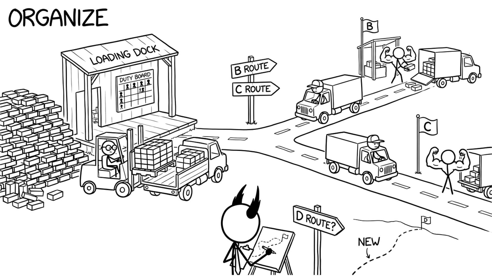

<section id="cap-organize" data-transition="fade" style="display:flex; align-items:center; justify-content:center; padding:0; background:#fcfcfa">

<p style="position:absolute;left:0;bottom:10px;width:1920px;margin:0;text-align:center;font-family:'Patrick Hand', 'Trebuchet MS', sans-serif;font-size:22px;color:#8a8f98">Copyright Dobromir Montauk 2026</p>
<aside><b>Organize.</b> Assign is who carries which brick this week. Organize is the structure that makes that call for you every week, so you can work on the next route. The shape of the team decides how much it can do.<br>- Clear ownership: every service, every alert and every customer issue has one team that owns it.<br>- Small teams with few dependencies ship faster than one big team with many.<br>- Few, explicit handoffs: product to engineering, engineering to QA, QA to support.<br>- An on-call rotation that doesn't burn out the same two people.<br>- Just enough process: a weekly plan, a retro, a postmortem. Kill the meetings nobody would miss.</aside>
</section>
